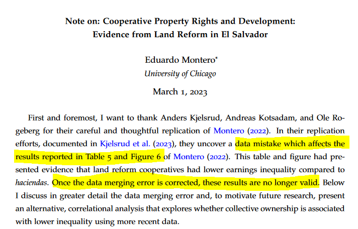
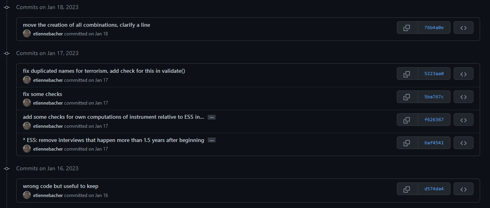
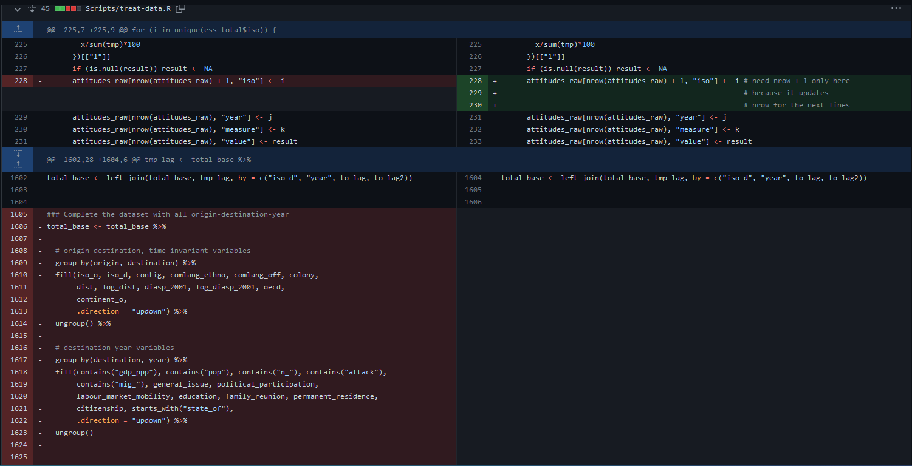

# A tibble: 6 × 7
country continent year lifeExp pop gdpPercap iso
<fct> <fct> <int> <dbl> <int> <dbl> <chr>
1 Afghanistan Asia 1952 28.8 8425333 779. AFG
2 Afghanistan Asia 1957 30.3 9240934 821. AFG
3 Afghanistan Asia 1962 32.0 10267083 853. AFG
4 Afghanistan Asia 1967 34.0 11537966 836. AFG
5 Afghanistan Asia 1972 36.1 13079460 740. AFG
6 Afghanistan Asia 1977 38.4 14880372 786. AFG Some good practices for research with R
Etienne Bacher
LISER
March 16, 2023
- Validate our data with
{validate}
- Make our R environment reproducible with
{renv}
- Make our paths reproducible with
{here}
- Keep a clean session
Validate our data with {validate}
Why?
Cleaning data can take hundreds or thousands of lines.
Sometimes we do some mistakes that can have big consequences.

Paper published in the JPE (error found in replication led by I4R):

What is {validate}?
{validate} is an R package whose goal is to ensure that our code has produced the expected output.
It should be used on the final and on the intermediate datasets (basically anytime we do some big modifications).
How to use {validate}?
- Define a series of expectations, or rules, with
validator()
- Pass our dataset through these rules with
confront()
- Check that all rules are respected.
Example
Let’s take an example with some data:
- Define a series of expectations, or rules, with
validator():
- Pass our dataset through these rules with
confront():
- Check that all rules are respected (or generate an error if there’s a failing test):
Writing rules can be tedious, for example if we have a list of variables that should be positive (GDP, population, etc.).
Instead of writing var1 >= 0, var2 >= 0, …, we can use var_group():
rules <- validator(
positive_vars := var_group(lifeExp, pop, gdpPercap),
positive_vars >= 0
)
x <- confront(my_data, rules)
x <- summary(x)
head(x) name items passes fails nNA error warning expression
1 V2.1 1704 1704 0 0 FALSE FALSE lifeExp - 0 >= -1e-08
2 V2.2 1704 1704 0 0 FALSE FALSE pop - 0 >= -1e-08
3 V2.3 1704 1704 0 0 FALSE FALSE gdpPercap - 0 >= -1e-08There are a lot of other helpers:
in_range(): useful for e.g percentagesfield_format()for regular expressionsis_linear_sequence(): useful to check if there are some gaps in time series- many others…
See more details in the The Data Validation Cookbook.
Make our R environment reproducible with {renv}
Packages in R
Packages make our life simpler by not having to reinvent the wheel.
But packages evolve! Between two versions of a same package:
- functions can be removed or renamed;
- function outputs can change in terms of results or display;
- function arguments can be moved, removed or renamed.
Moreover, packages can disappear if they are not supported anymore.
Personal experience
I did my Master’s thesis with R using ~30 packages in total.
Two months later, I couldn’t run my code anymore because a package I used to extract some results slightly changed one of its arguments.
Two lessons:
choose our packages wisely: better to use popular and actively developed packages;
use some tools to keep the version of the packages we used.
Packages in R
Even the most used packages in R can change a lot over the years (e.g tidyverse).
It is our responsibility to make sure that our scripts are reproducible. If I take our script 4 years later, I should be able to run it.
Problem: how to deal with evolving packages?
Solution
Take a snapshot of packages version using {renv}.
Idea: create a lockfile that contains the version of all the packages we used in a project, as well as their dependencies.
When we give the project to someone else, they will be able to restore it with the exact same package versions.
How does it work?
- Initialize
{renv}whenever we want withinit();
- Work as usual;
- Run
snapshot()from time to time to update the lockfile;
- If we come back to this project later, or if we share this project, run
restore()to get the packages as they were when we used them.
Example
Let’s take an example with the gapminder dataset. We import two packages, gapminder and countrycode:
library(gapminder)
library(countrycode)
gapminder$iso <- countrycode(gapminder$country, "country.name", "iso3c")
head(gapminder)# A tibble: 6 × 7
country continent year lifeExp pop gdpPercap iso
<fct> <fct> <int> <dbl> <int> <dbl> <chr>
1 Afghanistan Asia 1952 28.8 8425333 779. AFG
2 Afghanistan Asia 1957 30.3 9240934 821. AFG
3 Afghanistan Asia 1962 32.0 10267083 853. AFG
4 Afghanistan Asia 1967 34.0 11537966 836. AFG
5 Afghanistan Asia 1972 36.1 13079460 740. AFG
6 Afghanistan Asia 1977 38.4 14880372 786. AFG - Initialize
{renv}whenever we want withinit():
* Initializing project ...
* Discovering package dependencies ... Done!
* Copying packages into the cache ... Done!
The following package(s) will be updated in the lockfile:
# CRAN ===============================
- R6 [* -> 2.5.1]
- base64enc [* -> 0.1-3]
- bslib [* -> 0.4.2]
- cachem [* -> 1.0.6]
- cli [* -> 3.5.0]
- countrycode [* -> 1.4.0]
- digest [* -> 0.6.31]
- ellipsis [* -> 0.3.2]
- evaluate [* -> 0.19]
- fansi [* -> 1.0.3]
- fastmap [* -> 1.1.0]
- fs [* -> 1.5.2]
- gapminder [* -> 0.3.0]
- glue [* -> 1.6.2]
- highr [* -> 0.10]
- htmltools [* -> 0.5.4]
- jquerylib [* -> 0.1.4]
- jsonlite [* -> 1.8.4]
- lifecycle [* -> 1.0.3]
- magrittr [* -> 2.0.3]
- memoise [* -> 2.0.1]
- mime [* -> 0.12]
- pillar [* -> 1.8.1]
- pkgconfig [* -> 2.0.3]
- rappdirs [* -> 0.3.3]
- renv [* -> 0.16.0]
- rmarkdown [* -> 2.19]
- sass [* -> 0.4.4]
- settings [* -> 0.2.7]
- stringi [* -> 1.7.8]
- stringr [* -> 1.5.0]
- tibble [* -> 3.1.8]
- tinytex [* -> 0.43]
- utf8 [* -> 1.2.2]
- validate [* -> 1.1.1]
- vctrs [* -> 0.5.1]
- xfun [* -> 0.36]
- yaml [* -> 2.3.6]
# GitHub =============================
- rlang [* -> tidyverse/rlang@HEAD]
# https://yihui.r-universe.dev =======
- knitr [* -> 1.41.8]
The version of R recorded in the lockfile will be updated:
- R [*] -> [4.2.2]
* Lockfile written to 'C:/Users/etienne/Desktop/Divers/good-practices/renv.lock'.
Restarting R session...
* Project 'C:/Users/etienne/Desktop/Divers/good-practices' loaded. [renv 0.16.0]
This will create:
- a file called
renv.lock - a folder called
renv
don’t touch these files!
- Work as usual. Let’s import another package:
Hum… weird, dplyr was installed on my laptop.
{renv} creates a sort of “local library” in our project, so we need to reinstall dplyr first:
Now that we imported a new package, let’s see the status of {renv}:
- Run
snapshot()from time to time to update the lockfile;
The following package(s) will be updated in the lockfile:
# CRAN ===============================
- dplyr [* -> 1.0.10]
- generics [* -> 0.1.3]
- tidyselect [* -> 1.2.0]
- withr [* -> 2.5.0]
Do you want to proceed? [y/N]: Y
* Lockfile written to 'C:/Users/etienne/Desktop/Divers/good-practices/renv.lock'.Good to know
{renv} is not a panacea for reproducibility.
If we use some packages that depend on external software (e.g RSelenium uses Java), {renv} cannot install this software for us.
Learn more about {renv} capabilities and limitations on the package’s website.
Make our paths reproducible with {here}
Paths
Absolute path: path that is specific to our computer because it starts at the root of a computer.
Ex: “C:/Users/etienne/Desktop/myproject/mydata/WDI”
Relative path: path that is specific to a project because it starts at the root of the project.
Ex: “mydata/WDI”
Relative paths in R
Use the package {here}:
- to know the working directory:
- to use some data, script, etc.:
Relative paths in R
The only path in my script is “data/WDI/gapminder.csv”.
Therefore, if I give the folder “good-practices” to someone else:
the output of
here::here()will change because the location of the folder on the computer changed.but my code will still run because the path to the data inside the folder didn’t change.
Relative paths in R
More advantages:
{here}will also work if we open the script outside of an RStudio project{here}will work on all operating systems (e.g no paths problems because of Windows or Mac).
Get more info on {here} on the package’s website.
Keep a clean session
Remove all objects
Last but not least: how do we ensure our code will run in a fresh session on another laptop?
If you already use rm(list = ls()) at the beginning of your script…
… you’re wrong
Problem
What does rm(list = ls()) do?
rm(): remove a list of objects from the environmentls(): list all objects in the environment
So rm(list = ls()) removes all the objects from the environment: datasets, variables, etc.
What about loaded packages? What about options set with options()?
Problem
rm(list = ls()) does NOT create a fresh R session. Try it yourself:
load any package, e.g
dplyruse it, e.g
filter(iris, Species == "setosa")run
rm(list = ls())try again
filter(iris, Species == "setosa")
This will still work, meaning that the package was not unloaded.
Solution
Instead of using rm(list = ls()), you should completely restart the session to be sure your code can run in a fresh session:
Session > Restart R;
or Ctrl + Shift + F10;
or
rstudioapi::restartSession().
Bonus: version control
If this is familiar…
… you should (maybe) use version control!
Version control
Most famous version control tool: Git.
Difference between Git and Github:
- Git: core tool
- Github: web interface that makes it much easier to use Git
Version control
Idea: you are able to go back to your project at any point in time.
Workflow:
- put your project on a repository
- write code, write drafts, etc.
- once in a while (at the end of the day, or after a big coding session), commit and push your changes to the repository
- the repository keeps track of what has changed and allows you to go back to your code at any point in time.
Personal example

Personal example

Commits I made: important to add a useful message (unlike some commits here)
Personal example

Browse the repository when these commits were made (aka time-travel machine).
Personal example

Version control
Git & Github are also very useful for collaboration (if everyone knows how to use it). It is also possible to link Overleaf and Github.
But not easy to learn and takes time to be efficient (maybe a future training?)
Great resource for Git + Github + R: https://happygitwithr.com
Thanks!
Source code for slides and examples:
https://github.com/etiennebacher/good-practices
Comments, typos, etc.:
https://github.com/etiennebacher/good-practices/issues